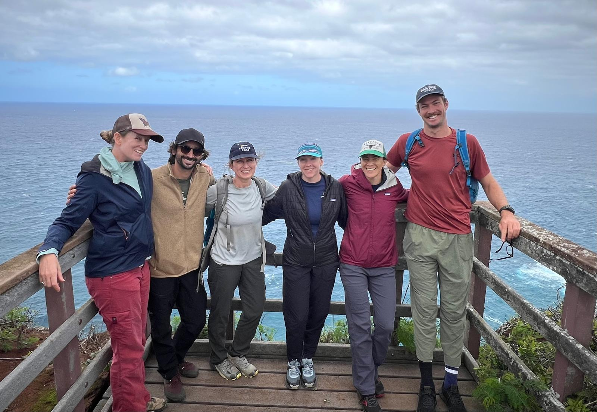

Pristine Seas Science Team SOP
Standard Operating Procedures for Research Excellence
This SOP is maintained collaboratively and updated regularly. Last updated: June 25, 2025.

Introduction
Welcome to the Pristine Seas Science Team Standard Operating Procedures (SOP). This document serves as the comprehensive guide for conducting scientific research across Pristine Seas expeditions and projects. It establishes standardized protocols, workflows, and best practices to ensure consistency, reproducibility, and quality in all research activities.
Our Mission
Pristine Seas works to explore, document, and protect vital places in the ocean. As the scientific foundation of this mission, our team conducts rigorous research to assess marine ecosystems and provide the evidence needed to support conservation efforts.
Core Research Methods
Our team uses a diverse set of integrated scientific methods to study marine ecosystems:
- Benthic surveys to quantify bottom types and invertebrates
- Reef fish surveys to document fish communities
- Environmental DNA (eDNA) to assess overall biodiversity and to support the detection of cryptic and rare species
- Baited Remote Underwater Video Systems (BRUVS) to quantify predatory species
- Seabird and marine mammal surveys
- Deep water surveys using ROVs, submersibles, and drop-cameras
Purpose of this SOP
This SOP provides:
- Collaborative practices to enhance team efficiency
- Standardized protocols for data collection across expeditions
- Data management workflows for organizing and storing data
- Analytical frameworks for consistent data processing and analysis
The SOP ensures that our scientific practices meet the highest standards of rigor, transparency, and reproducibility. By following these guidelines, we produce reliable data that can inform conservation decisions and contribute to our understanding of marine ecosystems.
Core Principles
The Pristine Seas Science Team is guided by these fundamental principles in all our work:
Scientific Excellence
- Curiosity
- Rigor
- Peer review
- Impact driven
Open Science
- Reproducibilty
- Transparency
- FAIR data principles
Collaborative Research
- Interdisciplinary approaches
- Local scientist engagement
- Broad partner network
Collaborative Framework
The Pristine Seas Science Team works across an integrated set of platforms:
Version control for code, analysis, and documentation
Collaborative document editing and data storage
Centralized database for expedition data
Get Started
Ready to dive in? Explore these key sections:
Expedition Planning
Prepare for successful field research with comprehensive planning guidelines
Field Methods
Standardized protocols for all Pristine Seas research methods
Data Science
Data workflows, R package documentation, and analysis standards
Media Library
Protocols for media collection, organization, and metadata requirements